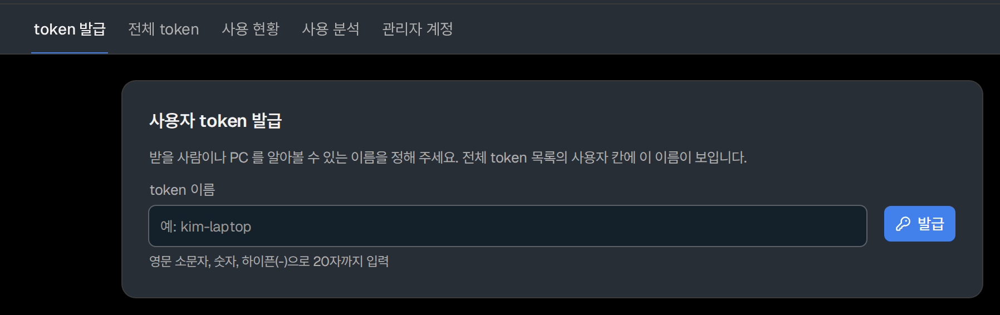
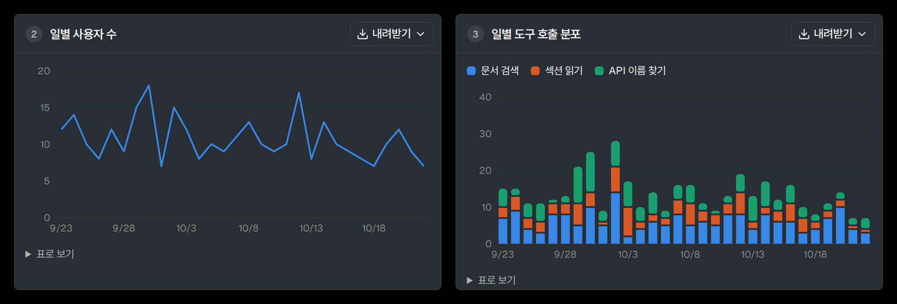

이 메서드는 어느 class에 있지?
지금은Services API 문서에서 class 페이지를 하나씩 열고 메서드 목록을 확인합니다.
tc-knowledge를 연결하면AI agent가 메서드 이름을 조회해서 class를 찾습니다.
질문하면 AI agent가 문서를 직접 검색해서 알려줍니다.문서는 영어지만 질문은 한국어로 해도 됩니다.
tc_search_docsActive Workspace 새 command 추가, toolbar priority, sublocation에서만 보이기 …결과 10개tc_fetch_sectionGetting started > Configuring command placementtc_fetch_sectionGetting started > Configuring an action to be executed via a handlertc_search_docsGetting started addIssueCmd commands section iconId title …결과 8개tc_fetch_sectionGetting started > Specifying the command title and icontc_fetch_sectionConfiguring command placement, visibility, and action > Managing visibility of the commandtc_search_docscondition expression check current sublocation …결과 8개tc_fetch_sectionAppCtx > Properties지금은Services API 문서에서 class 페이지를 하나씩 열고 메서드 목록을 확인합니다.
tc-knowledge를 연결하면AI agent가 메서드 이름을 조회해서 class를 찾습니다.
지금은Support Center에 로그인해서 키워드로 검색하고 나온 문서를 하나씩 읽으며 설정을 찾습니다.
tc-knowledge를 연결하면AI agent가 질문과 뜻이 가까운 섹션을 찾아서 본문까지 읽고 알려줍니다.
지금은문서를 다시 찾아서 코드와 하나씩 대조합니다.
tc-knowledge를 연결하면검색 결과마다 원문 링크가 붙어 있습니다.
지금은기능 설명에서 preference 이름을 찾은 뒤 그 이름으로 다시 검색해서 기본값을 확인합니다.
tc-knowledge를 연결하면AI agent가 preference 정의 페이지를 찾아서 이름과 기본값을 함께 알려줍니다.
AI agent는 도구 3개로 문서를 검색하고 본문과 API 이름을 조회합니다.
섹션 검색에는 Teamcenter 문서로 추가 학습한 검색 모델을 사용합니다.
tc_search_docs질문과 뜻이 가까운 섹션을 찾고 결과마다 원문 링크를 붙입니다.
tc_search_docs
tc_fetch_section찾은 섹션은 본문이 길어도 끝까지 가져옵니다.
tc_lookup_symbol코드에 넣기 전에 이름이 API reference에 실제로 있는지 확인하고 시그니처를 가져옵니다.
92,421문서설명서 페이지 21,731개, API reference 페이지 57,520개(ITK, C++ API, Services API), 환경설정 정의 페이지 13,157개, PDF 13개
409,351섹션검색 결과가 나오는 단위
284,504API 이름class, 함수, 메서드 이름
*Teamcenter 2412 공식 문서 기준입니다.
Active Workspace
AW 테이블에 커스텀 속성을 컬럼으로 추가하려면 어디를 고쳐야 돼?
XRT의 objectSet 테이블이면 objectSet에 property로 속성을 추가합니다. 검색 결과처럼 primary work area에 나오는 테이블이면 column configuration에 ColumnDef를 추가합니다. 고친 구성은 import_uiconfig로 다시 등록합니다.
SBL C#
SBL C#에서 Item 속성 값을 바꿀 때 형식 체크를 넣고 싶은데 어떻게 해?
그 속성의 setter에 PreCondition 확장을 C# 메서드로 붙입니다. 메서드에 PropertySetterPreCondition attribute를 달고 파라미터로 속성 이름을 넣습니다. PreAction과 PostAction도 같은 방식으로 붙입니다.
ITK
ITK로 BOM을 펼쳐서 하위 부품 목록을 읽는 C 코드 예제 있어?
BOM_create_window로 window를 생성하고 BOM_set_window_top_line으로 top line을 정합니다. 하위 line은 BOM_line_ask_child_lines를 재귀로 호출해서 읽습니다. 예제 소스는 TC_ROOT/sample/pse에 있습니다.
개인별로 token 발급 및 폐기 기능 지원

기간별로 검색 건수와 자주 찾는 문서, 답을 못 찾은 검색을 확인합니다. 이 숫자로 도입 효과와 개선할 부분을 파악합니다.

각자 프로젝트 상황에 맞춰 패키지를 구성할 수 있습니다. 필요한 버전과 문서만 담아 제작해 드립니다.
프로젝트에서 사용하는 Teamcenter 버전의 공식 문서로 패키지를 제작합니다.
Schedule Manager, Classification처럼 Teamcenter에 설치한 모듈에 맞춰 필요한 설명서만 담습니다.
완성한 패키지는 docker 이미지와 설치 가이드로 전달합니다. 사내 서버 1대에 설치해서 전체 팀원이 같이 사용할 수 있습니다.
아래 도입 문의로 연락하면 담당자가 docker 이미지와 설치 가이드를 직접 전달합니다.
가이드대로 사내 서버에 설치합니다.
서버 필요 사양
설치한 서버의 관리 화면에서 token을 발급합니다.
MCP를 지원하는 AI agent라면 설치한 서버 주소와 발급한 token으로 연결합니다. 아래는 Claude Code, OpenCode, Open WebUI 예시입니다.
claude mcp add --transport http --scope user tc-knowledge http://<서버>:8765/mcp --header 'Authorization: Bearer ${TCK_TOKEN}'{
"mcp": {
"tc-knowledge": {
"type": "remote",
"url": "http://<서버>:8765/mcp",
"oauth": false,
"headers": { "Authorization": "Bearer {env:TCK_TOKEN}" }
}
}
}연동 가능 Agent: Claude Code, Codex CLI, Gemini CLI, OpenCode, Open WebUI 등
필요한 Teamcenter 버전과 문서 범위를 알려 주시면 안내해드리겠습니다.